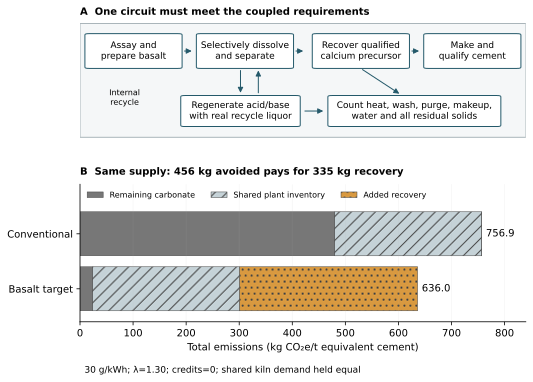
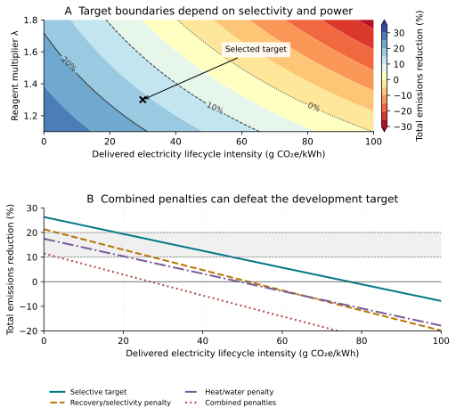

Basalt-Derived Calcium for Lower Carbon Portland Cement
A Carbon Budget for Process Development
Publication date:
Manuscript date: 21 October 2026
Abstract
Basalt-derived calcium warrants integrated development toward 10–20% lower total emissions from Portland cement manufacture. The route avoids carbonate decomposition but must pay for extraction, separation and regeneration. We combine a coupled operating specification with a paired carbon budget, assigning zero coproduct, carbon-removal or allocation credits and no assumed kiln-energy saving. A derived reagent-equivalent constraint accounts explicitly for sodium release; the principal selected multiplier is 1.30 relative to calcium-only demand. Under a reconstructed dry-process comparator with the same energy supply and matched cement, selected operation at 20–40 g CO₂e/kWh calculates 12.5–19.4% lower total emissions. At 30 g/kWh, the conventional and basalt cases are 756.9 and 636.0 kg CO₂e/t. At 50 g/kWh the reduction falls to 9.1%, and combined process penalties can erase the benefit. These conditional results justify testing whether selective calcium recovery, representative-liquor recycling and heat/water integration can coexist in a circuit that produces qualified cement. An instrumented demonstration with complete matched inventories should establish the achievable reduction.
Keywords: basalt, Portland cement, calcium recovery, cement decarbonization, carbon budget, reagent regeneration, process integration
1 Why the calcium source deserves development
Developing basalt-derived calcium offers a direct way to reduce the emissions associated with cement’s calcium supply. Limestone decomposition releases CO₂ through CaCO₃→CaO+CO₂. Calcium bound in silicate minerals does not carry that carbonate carbon. Recovering it into a suitable precursor can therefore avoid this reaction while retaining Portland cement as the intended product. “CaO-equivalent” is a way of expressing calcium content; it does not imply that free lime occurs in basalt.
Our basalt survey distinguishes recovered-calcium routes from powder addition, fibers and aggregate substitution [1]. The silicate-precursor survey connects dissolution, separation, regeneration and qualification [2]. Prancevic et al. develop the underlying silicate-calcium process argument [3]. Here we assess that opportunity through a carbon budget with zero coproduct credits, an explicit operating hypothesis and a matched comparison with conventional manufacture. The practical objective is 10–20% lower total manufacturing emissions in equivalent cement, with every necessary recovery burden counted.
The process need not consume less energy overall to be worth developing. It must emit sufficiently less after the additional energy and materials are counted. A moderate reduction in a qualified cement product remains valuable without complete decarbonization, carbon-negative claims or a market for every residual stream. The question is which recovery architectures preserve enough of the avoided-carbon margin.
2 The favorable operating point and its technical hinge
The functional unit is one tonne of cement at the factory gate, with matched clinker fraction, composition class and required performance. The proposed chain comprises characterized basalt, phase-informed preparation and dissolution, impurity separation, usable calcium-precursor isolation, reagent regeneration and qualified clinker/cement production. Figure 1 includes water, wash, purge and residual solids. The acid/base circuit is a worked architecture; the carbon-budget method can assess other basaltic routes using their own measured duties.
Coproduct displacement, carbon-removal credits and allocation of necessary burdens away from cement are zero. Required preparation, purification, makeup, water treatment, residues and corrective materials remain charged to cement. Retained conventional operations receive the same energy assumptions as the basalt route. Main cases hold shared kiln-energy demand equal, while charging all extra recovery heat. Potential product sales and an assumed thermodynamic kiln advantage do not pay for the process.
The physical opportunity is selective liberation rather than indiscriminate dissolution. Neron et al.’s equilibrium model identifies acid-loading-dependent separation of calcium from aluminum; its kinetic fit uses earlier concentrated-acid anorthosite experiments, not a dilute-acid basalt trial [6]. Yan et al.’s thermodynamic analysis also identifies acid choice and loading as relevant variables, without establishing rates or plant recovery [13]. This supports testing a selective window, with mineralogy and residence time treated as design variables. The simultaneous 90% usable-calcium recovery, mild operation and low impurity demand remain the hypothesis to establish.
A simple equivalent balance makes that hypothesis sharper. For plagioclase with anorthite fraction a, co-release of Na and Ca consumes at least two proton equivalents per Ca plus one per Na. Relative to calcium-only demand, λ ≥ 1 + (1−a)/(2 a). At a=0.65, the bound is 1.269 before Mg, Al, Fe, excess acid or losses. Thus λ=1.10 cannot describe that feed with full Na co-release. We select 1.30 for the principal case and retain 1.10 as an ambitious reference. The extra allowance is still small; a real basalt circuit may require more. Full Al co-extraction from pure anorthite would raise the stoichiometric multiplier to four. Feed selection and selectivity directly determine the regeneration load.
Separation has concrete architectural leads. Stern, Benck and Chiang disclose staged impurity removal and calcium precipitation, including a basalt experiment [14]. That experiment also introduces calcium chloride and hydrated lime, so its solution concentrations do not establish basalt-derived calcium recovery. Any demonstration must distinguish rock calcium from reagent-borne calcium and charge the latter’s production. Finke and Leandri’s US and Chinese disclosures remain one architecture family [10, 11]. These sources inform circuit design without validating the selected integrated point.
Regeneration and solids handling must be coupled to that chemistry. Cassaro et al.’s clean-brine pilot anchors continuous stack SEC values of 1.8 and 2.1 kWh/kg NaOH-equivalent [5]; representative rock liquor may need additional purification, purge and membrane duty. The selected 85% sensible-heat recovery and 80% cake solids require compatible flow rates, heat-exchanger approach temperatures, filtration and washing. Overall calcium recovery is the product of dissolution, separation and isolation yields. A high leach yield alone cannot establish it. Mineral-phase and alteration effects reported for Norwegian anorthosite reinforce the need to characterize the actual feed [15].
Table 1. Principal paired comparison and selective-recovery specification. Reported anchors, derived quantities and selected requirements remain distinct. A common inventory is a screening convention, not proof of equal measured plant performance.
| Input or boundary | Paired specification | Evidence/status |
|---|---|---|
| Product and clinker | Equivalent cement; clinker 0.914 | Product matching required; clinker anchor [4] |
| Calcination and eligible share | 480; 95% → 456 kg CO₂/t | 480 reported [4]; eligibility selected |
| Common kiln input | 3.5 GJ/t clinker = 3.199 GJ/t cement | Selected within annual dry-process range [12] |
| Common electricity and other | 100 kWh/t; 50 kg CO₂e/t | Electricity range anchor [12]; other selected 0–100 |
| Energy factors | Same Ie in both routes; Ik=Ip=70 kg/GJ | Selected lifecycle factors on stated input bases |
| Feed and overall recovery | 12 wt% CaO-equivalent; 90% | Grade context [3]; recovery selected |
| Reagent multiplier and stack SEC | λ=1.30; 1.8 kWh/kg NaOH-eq | λ chemistry-aware target; clean-brine SEC [5] |
| Acid/base and yield | 0.9/1.0 M; acid/base yield 0.90 | Selected, not a measured recycle balance |
| Heat recovery and cake solids | 85%; 80% | Coupled integration targets |
| Credits and kiln saving | All credits 0; main kiln saving 0 | Necessary recovery burdens charged to cement |
3 A paired carbon budget
The PCA declaration supplies a transparent composition anchor: reported calcination C=480 kg CO₂/t and clinker fraction 0.914, from US 2019 foreground in a revised-2023 EPD [4]. We select a 95% replaceable share, D=456 kg/t, retaining 24 kg. This corresponds to 0.5810 t CaO-equivalent/t by stoichiometry, not a measured Ca/Mg assay. A site comparison must replace that selection with the actual matched calcium/carbonate inventory.
For each common energy/product scenario j, write conventional emissions B_j=C_j+Kconv, _j and basalt emissions Ebas, _j=C_j−fD_j+Kbas, _j. The K terms contain all remaining cradle-to-gate burdens. Let ΔK_j=Kbas, _j−Kconv, _j, including recovery and every genuine route difference. Then:
Ebas,_j=B_j−fD_j+ΔK_j; R_j=(fD_j−ΔK_j)/B_j. (1)
A desired fractional reduction r requires:
ΔK_j ≤ fD_j−rB_j. (2)
The reconstructed reference explicitly separates kiln input Qk, common electricity Wc and other common burdens U: B_j=C+QkIk+WcIe+U. We select 3.5 GJ/t clinker, or Qk=3.199 GJ/t cement, and Wc=100 kWh/t. The JRC technical reference distinguishes annual dry-process use from lower short performance-test values [12]. U=50 kg/t is an exposed common-burden assumption, varied from 0 to 100; it is not extracted from the EPD. The principal Ik and recovery-heat factor Ip are each selected as 70 kg CO₂e/GJ on their respective plant-input bases. Kiln fuel energy and supplied recovery heat are different services; their equal numerical factors are a scenario choice, not a thermodynamic equivalence or an EPA lifecycle factor [8].
Both routes receive the same electricity factor in each scenario, including conventional grinding and fans. Actual energy carriers, conversion efficiencies, upstream supply and any required delivery/storage must support the lifecycle factors at the relevant input boundary. In the principal screen shared kiln demand and other operations cancel in the absolute difference; all recovery power and heat are added. No credit is taken for displaced limestone grinding. A change in feed preparation, firing, infrastructure or precursor correction that does not cancel belongs in ΔK. An unmeasured differential burden cannot be hidden in U.
This reconstruction is a consistent engineering comparison, not an observed paired-plant LCA. Lower clinker content, weaker cement or different waste-fuel allocation cannot create an apparent calcium-source advantage. Carbon capture, kiln electrification and other fundamentally changed conventional routes require their own paired inventories. The same method applies, but the results below do not establish superiority over those alternatives.
Dry-rock demand is M=fq/(gη), where g is CaO-equivalent grade and η is recovery into acceptable precursor. At 12 wt% and 90%, full replacement requires 5.38 t rock/t cement. The large throughput makes selective reaction and low-liquid-loss operation central. Equation (2) is a total budget, not an allowance for each unit operation. Figure 1 connects the physical circuit to the margins that required operations must share.

Figure 1. Coupled recovery hypothesis and paired carbon budget. Required recovery, recycle, purge and solids operations remain inside the boundary. The lower panel decomposes the selected 30 g/kWh paired cases: common plant burdens cancel in the absolute difference, while avoided carbonate emissions must pay for all added recovery duties. Credits and main kiln-energy saving are zero.
4 Design cases that retain useful savings
The principal selective target uses λ=1.30, 12 wt% feed CaO-equivalent and 90% overall calcium recovery, with the clean-brine 1.8 kWh/kg stack anchor. Other selected inputs are a 35 K temperature rise, 85% sensible-heat recovery, 80% cake solids, 2% fresh paired makeup and the utility and residual-treatment allowances specified in the supplement. At 30 g/kWh it requires 2,581.9 kWh of recovery electricity and 1.74 GJ extra heat per tonne cement. This is a coupled specification for testing, not evidence that those inputs already coexist.
The added burden at that point is 335.1 kg CO₂e/t: electricity 77.5, heat 122.0, paired makeup 71.8, other recovery operations 43.0, feed carbonates 10.8 and fixed increment 10.0. Avoiding 456 kg leaves 120.9 kg net reduction. Conventional emissions are 756.9 and basalt emissions 636.0 kg/t, a 16.0% reduction. The same delivered electricity factor applies to common conventional and basalt operations.
At 20, 30 and 40 g/kWh, the selective target calculates 19.4%, 16.0% and 12.5% lower total emissions. At 50 g/kWh it falls to 9.1%. The moderately integrated design misses 10% at 30 g; a combined recovery/selectivity and heat/water penalty can erase the benefit. Table 2 carries these failures beside the favorable results. The 10–20% band is a development objective, not a requirement that every scenario must satisfy or a claim of achieved 20%.
Table 2. Reconstructed paired outcomes, with the same energy supply and matched product in each row. All values are calculated, not observed plant footprints. The selective target uses λ=1.30; adverse specifications are given in the supplement.
| Design | Ie g/kWh | Conventional kg/t | Basalt kg/t | Reduction |
|---|---|---|---|---|
| Selective target | 20 | 755.9 | 609.2 | 19.4% |
| Selective target | 30 | 756.9 | 636.0 | 16.0% |
| Selective target | 40 | 757.9 | 662.9 | 12.5% |
| Selective target | 50 | 758.9 | 689.7 | 9.1% |
| Moderate integration | 30 | 756.9 | 690.0 | 8.8% |
| Recovery/selectivity penalty | 30 | 756.9 | 689.8 | 8.9% |
| Combined process penalties | 30 | 756.9 | 767.2 | -1.4% |
| Hot dilute | 30 | 756.9 | 1,063.8 | -40.5% |
5 Where the margin survives and disappears
For the selective target, the paired 10% electricity ceiling is 47.4 g CO₂e/kWh; the 20% ceiling is 18.3 g/kWh. The denominator changes with conventional electricity, so these thresholds solve the paired equation rather than holding B fixed. Figure 2 shows the feasible target region and its loss as λ increases. Low-carbon supply must be supported by delivered lifecycle accounting; generation technology labels and medians alone do not establish it [7].

Figure 2. Calculated development region for paired inventories. The upper panel varies delivered electricity and the reagent-equivalent multiplier; lines mark 10% and 20% total-emissions reductions. The lower panel holds the principal λ=1.30 and shows how named coupled process penalties change the outcome. The parameter space is a design screen, not a probability of success or proof of feasible combinations.
At 30 g/kWh the principal case has 45.2 kg/t of headroom before the reduction drops below 10%; at 40 g/kWh only 19.3 kg/t remains. At 20 g/kWh the case is 4.5 kg/t short of an exact 20% reduction. These margins must absorb any required duty beyond the existing explicit terms and reserves. A selected additional 1 GJ, 100 kWh and 30 kg/t of differential materials/residue burdens reduces the 30 g result to about 2.4%. No prospective coproduct market fills the gap.
Physical tradeoffs should be stressed together. The recovery/selectivity bundle reduces overall recovery to 85%, raises λ to 1.50, grinding to 60 kWh/t rock and other recovery burden to 10 kg/t rock. The heat/water bundle reduces sensible-heat recovery to 75%, cake solids to 75% and adds 100 kWh/t. Combining them is more severe than either alone. These are selected dependent stresses, not measured likelihoods. Hot dilute and broad-extraction cases remain unfavorable; cleaner power cannot remove a non-electric burden already larger than the avoided-carbon allowance.
A common lower footprint does not automatically remove the calcium-source benefit: common burdens cancel in the absolute saving but affect the percentage denominator. A lower conventional footprint caused by reduced carbonate emissions, lower clinker content or a different process changes the comparison itself. Comparisons with published cement declarations must reconcile product composition, energy supply and allocation; a smaller headline footprint cannot be substituted for B while retaining the basalt route’s inventory unchanged [9]. The supplement gives an illustrative fixed-inventory comparison and explains its different accounting basis.
The energy attribution is explicit. Changing the common electricity factor from 400 to 30 g/kWh lowers the conventional case by 37.0 kg/t and the principal basalt case by 992.3 kg/t because regeneration is highly electric. Under the same 30 g supply, the calcium-source change then saves 120.9 kg/t. Comparing clean-power basalt directly with ordinary-power conventional manufacture would combine these effects; it must not be labeled the calcium-source benefit alone. Efficient conventional manufacture deserves access to the same clean-energy options.
6 A development program defined by the budget
Support an integrated demonstration with a predeclared carbon decision. First select an actual basaltic feed through mineral phases, Ca/Na/Mg/Al/Fe assay, carbonates, moisture and particle-size response. Establish usable-calcium recovery and reagent-equivalent demand together across residence time and acid loading. Seek a selective window that leaves enough impurity capacity within the regeneration budget; replace the selected λ and η with measured circuit values.
Run representative-liquor regeneration and separation continuously for a stated duration and throughput. Close Ca, reagent/salt and water balances across all internal and external streams, including any lime or calcium-bearing neutralizer. Set balance tolerances from analytical precision before interpreting the run. Meter the full stack and auxiliaries, grinding, pumping, wash treatment, heat exchange, dewatering and drying. Replace generic allowances with explicit membrane/replacement, corrosion, purge, transport and residue inventories. Table S3 in the supplement identifies the measurements needed to replace the assumptions.
Produce and qualify the intended cement, counting corrective inputs and actual firing duties. Build the conventional comparator from the same product and consistent lifecycle conventions, including its own electricity and thermal supply. Propagate material and utility uncertainties into the complete difference. Confirm 10% or 20% only when the measured margin supports it; a run that misses the target still identifies the particular extraction, recycle or integration change worth pursuing.
This program is worth pursuing because the chemical opportunity is large enough to fund substantial additional processing, and the carbon budget identifies a useful operating window without coproduct credits. Its central task is selective, closed-loop integration rather than a favorable isolated leaching result. Cost, water availability, residue acceptance and reliability must also earn scale-up; a carbon screen alone does not settle them.
7 Conclusion
Develop basalt-derived calcium toward 10–20% lower total emissions in qualified Portland cement. The carbon budget accounts for reagent demand, gives conventional manufacture the same energy supply and exposes the remaining integration margin. Selected operation calculates 12.5–19.4% reductions at 20–40 g/kWh, while higher electricity intensity, impurity demand and combined penalties can defeat the target. The next useful step is an instrumented integrated demonstration that measures the whole calcium/reagent/water circuit and its cement product against a matched incumbent. A significant reduction that survives that comparison would justify further development.
AI Assistance and Editorial Responsibility
This report was developed by Brad Pierce with substantial assistance from an AI model. He established the research objectives and editorial direction and retains responsibility for the claims, source attributions, and decisions about publication.
Calculation supplement and data
The calculation supplement provides the equations, input values and sources, explicit assumptions, sensitivity analyses, and reproduction instructions. The accompanying code and data allow readers to reproduce the reported results and evaluate alternative operating assumptions.
References
- [1] Pierce, B. (2026). Basalt and Basalt-Derived Materials in Cement Manufacture and Cementitious Composites: A Global Literature Survey. Zenodo. https://doi.org/10.5281/zenodo.23489459
- [2] Pierce, B. (2026). Silicate Rocks and Mineral Residues as Sources of Cementitious Precursors: A Literature Survey. Zenodo. https://doi.org/10.5281/zenodo.23524396
- [3] Prancevic, J. P., Finke, C. E., Peterson, E., Nguyen, W., Clarens, A. F., and Pyatina, T. (2026). Silicate-derived calcium as a pathway to low-carbon Portland cement. Communications Sustainability 1, 78. https://doi.org/10.1038/s44458-026-00056-4
- [4] Portland Cement Association (2023 revision). Environmental Product Declaration Portland Cement. EPD 195; US 2019 foreground. Table 4, p 10; Table 1, p 4. https://www.cement.org/wp-content/uploads/2024/07/pca_epd_portland_athena_final_revised_nov2023-1.pdf
- [5] Cassaro, C., Virruso, G., Culcasi, A., Cipollina, A., Tamburini, A., and Micale, G. (2023). Electrodialysis with Bipolar Membranes for the Sustainable Production of Chemicals from Seawater Brines at Pilot Plant Scale. ACS Sustainable Chemistry & Engineering 11, 2989–3000. https://doi.org/10.1021/acssuschemeng.2c06636
- [6] Neron, T., Cassayre, L., Zhuo, X., Manero, M.-H., Bourgeois, F., Billet, A.-M., and Julcour, C. (2022). Thermo-kinetic modelling of the acidic leaching of anorthosite: Key learnings toward the conception of a sustainable industrial process. Minerals Engineering 180, 107500. https://doi.org/10.1016/j.mineng.2022.107500
- [7] National Renewable Energy Laboratory (2021). Life Cycle Greenhouse Gas Emissions from Electricity Generation: Update. NREL/FS-6A50-80580. Table 1. https://research-hub.nlr.gov/en/publications/life-cycle-greenhouse-gas-emissions-from-electricity-generation-u/
- [8] US Environmental Protection Agency (2025). GHG Emission Factors Hub. Table 1. https://www.epa.gov/system/files/documents/2025-01/ghg-emission-factors-hub-2025.pdf
- [9] Heidelberg Materials Cement Sverige AB (2024). CEM I 52.5 R SH-cement Skövde. Environmental Product Declaration NEPD-7911-7580-EN, issued 24 October 2024; study year 2023. A 1–A 3 results, p 6. https://www.epd-norge.no/getfile.php/13204238-1741714994/EPDer/Byggevarer/Sement/NEPD-7911-7580_CEM-I-525-R-SH-cement-Sk-vde.pdf
- [10] Finke, C. E., and Leandri, H. F. Process to make calcium oxide or ordinary Portland cement from calcium bearing rocks and minerals. US11718558B2. https://patents.google.com/patent/US11718558B2/en
- [11] C.E.芬克 and H.F.利安德里 (2022). 由含钙岩石和矿物生产氧化钙或普通波特兰水泥的工艺. CN114555539A. Chinese publication in the same patent family as [10]. https://patents.google.com/patent/CN114555539A/zh
- [12] Schorcht, F., Kourti, I., Scalet, B. M., Roudier, S., and Delgado Sancho, L. (2013). Best Available Techniques (BAT) Reference Document for the Production of Cement, Lime and Magnesium Oxide. JRC 83006, EUR 26129. Sections 1.3.3 and 1.4.2, pp 47, 49,101. https://doi.org/10.2788/12850
- [13] 晏恒、席细平、石金明、艾仙斌、林敏 (2021). 酸性溶剂下玄武岩中钙镁元素溶解浸出特性的热力学分析 [Thermodynamic Analysis of Dissolution and Leaching Characteristics of Calcium and Magnesium from Basalt in Acid Solvent]. Issue 2, 54–58+64. Assessment based on the publisher abstract. https://doi.org/10.16056/j.2096-7705.2021.02.011
- [14] Stern, M. C., Benck, J. D., and Chiang, Y.-M. (2025). High efficiency acid-base leaching methods and systems. US20250388512A1, published 25 December 2025. Figure 13 and accompanying stream-composition description. https://patents.google.com/patent/US20250388512A1/en
- [15] Wanvik, J. E. (2000). Norwegian anorthosites and their industrial uses, with emphasis on the massifs of the Inner Sogn-Voss area in western Norway. Norges geologiske undersøkelse Bulletin 436,103–112. https://static.ngu.no/filearchive/102/Bulletin436_11.pdf